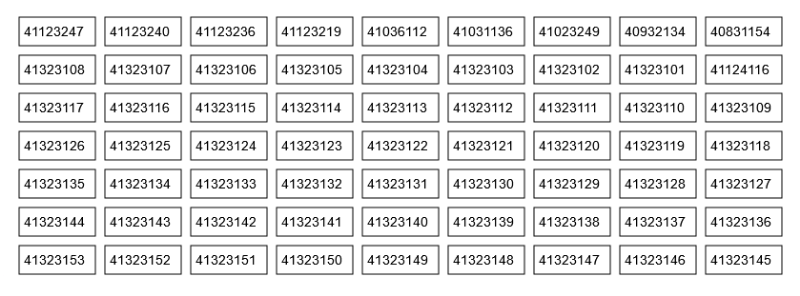
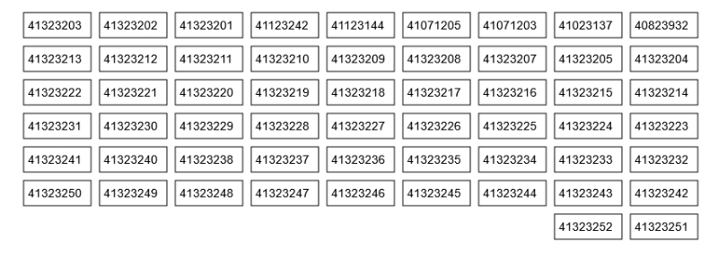

class_materials <<
Previous Next >> cmsimde
Seat
1a 座位表1, 分組座位表
1b 座位表1, 分組座位表
計算機程式 1a 座位表:

計算機程式 1b 座位表:

上述程式透過與 claude.ai 進行以下對話後產生：
問題:
https://mde.tw/2024/1a.txt 為一行學員的學號資料, 請用 Brython open().read() 讀取後, 利用 Canvas 在 id 為 brython_div 的超文件位置上, 採由上而下, 由右而左的次序, 用每一個學員除畫出學號外, 還加上外方框線, 且每一列共列出 9 位學員, 畫完後,以print() 印出 "done"
問: 怎麼只列出一位學員? (因為 AI 沒有用跳行隔開學員學號, 而是用 "," 隔開資料)
說明: 因為 AI 沒能正確解讀資料, 因此提供資料格式供其參考:
問:
40831154
40932134
41023249
41031136
41036112 這是前面五行資料, 請修改程式
說明: 接下來 AI 已經能夠正確解讀資料, 但因為提供錯誤的 html id 字串因此產生下列錯誤,
File "<string>", line 8, in draw_students
KeyError: brython_div
問: id 為 brython_div1, x 方向的框寬可以小一點, 否則最左邊顯示不出來
說明: 這時 AI 已經正確完成任務 (也就是修正各學員外框寬度後, 存為 group1), 但因所選的外框太寬, 因此最左邊的學號沒有完全顯示出來, 要求針對這個問題進行處理
問: 可不可以從最右邊開始, 第一列前三個與第二列前三個學員為同一組, 其框內背景請塗上同一個淡顏色辨識, 若至最後一列, 並沒有前三與後三作為同一組, 請就剩下的組員若少於 6 名則設為同一組, 若大於 6 則儘量平均方為兩組.
問: 是原則上同一列三位與下一列對齊的三位為同一組
問: 每一列不是有 9 位學員, 第二列也是有 9 位學員, 第一列的前三個學員與第二列的前三位為同一組, 接下來則是第一列的第 4, 5,6 位學員與第二列的第 4,5,6 位學員則也是同一組, 然後剩下的學員依照這個次序分組, 同一組的塗上相同的背景顏色. 最後因為可能剩下一個列的組員, 因此沒有辦法與下一列的組員進行分組, 因此只能就同一列每六位學員一組, 但若只剩下假設 9 位, 則一組 5 位同學,另一組 4 位, 表示一組至少要有 4 位學員的意思.
問: 原先的學員位置弄亂了, 目前第一列至第六列,只有從右邊算來前 6 位學員進行分組塗色, 各列 7,8,9 並沒有進行分組塗色
說明: 結果 AI 完成 group2 Brython 程式的編寫
以下為 group1 Brython 程式碼:
# 從 Brython 的瀏覽器模組中導入所需的功能
from browser import document, ajax, html
# 定義一個名為 `draw_students` 的函數，用於處理數據並進行繪製
def draw_students(evt):
# 從事件物件中獲取文字資料
data = evt.text
# 根據換行符將數據分割成學生名稱的列表
students = data.strip().split('\n') # 以換行符分割
# 檢查是否存在 ID 為 'brython_div1' 的 div，如果不存在則創建
if 'brython_div1' not in document:
# 創建一個新的 DIV 元素，並設置其 ID
div = html.DIV(id='brython_div1')
# 將新創建的 DIV 元素添加到文檔中
document <= div
# 創建一個畫布元素，並設置其寬度和高度
canvas = html.CANVAS(width=900, height=600)
# 將畫布元素添加到 ID 為 'brython_div1' 的 DIV 中
document['brython_div1'] <= canvas
# 獲取畫布的 2D 渲染上下文
ctx = canvas.getContext('2d')
# 設置初始繪製位置
x, y = 890, 20 # 稍微調整起始 x 位置
col_count = 0 # 計數器，用於跟踪當前列數
box_width = 80 # 設置每個學生姓名框的寬度
# 利用迴圈取出每個學生姓名
for student in students:
student = student.strip() # 去除多餘的空白字符
if not student: # 如果學生姓名為空，則跳過
continue
# 繪製學生姓名框的邊框
ctx.strokeRect(x-box_width, y-15, box_width, 30)
# 設置繪製文字的字體大小
ctx.font = '14px Arial' # 稍微減小字體大小
# 在指定位置繪製學生姓名
ctx.fillText(student, x-box_width+5, y+5)
# 更新繪製位置，準備繪製下一個框
x -= box_width + 10 # 框之間的間距設為 10
col_count += 1 # 更新列計數器
# 因為每一列有 9 台電腦
# 如果列計數器達到 9，則換行
if col_count == 9:
x = 890 # 重置 x 位置到最右側
y += 40 # 增加 y 位置，移動到下一行
col_count = 0 # 重置列計數器
# 打印繪製的學生總數
print(f"Total students drawn: {len(students)}")
print("done") # 打印“完成”信息
# 定義一個名為 `load_data` 的函數，用於從指定 URL 加載數據
def load_data(url):
# 創建一個新的 AJAX 請求對象
req = ajax.ajax()
# 將 `draw_students` 函數綁定到 AJAX 請求的完成事件
# 表示隨後 AJAX 提出 request 完成之後
# 要求執行 draw_students 函式
req.bind('complete', draw_students)
# 打開 AJAX 請求，指定請求類型為 GET，請求的 URL 和是否採非同步方式進行 request (True 表示採非同步)
req.open('GET', url, True)
# 發送 AJAX 請求
req.send()
# 調用 `load_data` 函數，從指定 URL 加載學生數據
load_data('https://mde.tw/2024/1b.txt')
以下為 group2 Brython 程式碼:
from browser import document, ajax, html # 從 Brython 的 browser 模組中導入 document（操作 HTML 文檔）、ajax（發送非同步請求）和 html（創建 HTML 元素）功能
import random # 導入 Python 的 random 模組，用於生成隨機數字
def generate_pastel_color():
r = random.randint(200, 255) # 生成一個介於 200 到 255 之間的隨機紅色通道值
g = random.randint(200, 255) # 生成一個介於 200 到 255 之間的隨機綠色通道值
b = random.randint(200, 255) # 生成一個介於 200 到 255 之間的隨機藍色通道值
return f'rgb({r},{g},{b})' # 返回生成的柔和顏色的 RGB 字符串表示
def draw_students(evt):
data = evt.text # 從 AJAX 請求事件對象中獲取伺服器返回的文本數據
students = data.strip().split('\n') # 去除首尾空白並根據換行符分割成學生名單列表
if 'brython_div1' not in document: # 檢查文檔中是否已存在 ID 為 'brython_div1' 的 DIV 元素
div = html.DIV(id='brython_div1') # 創建一個新的 DIV 元素，ID 設置為 'brython_div1'
document <= div # 將創建的 DIV 元素添加到文檔中
canvas = html.CANVAS(width=900, height=600) # 創建一個寬 900 像素、高 600 像素的畫布元素
document['brython_div1'] <= canvas # 將畫布添加到 ID 為 'brython_div1' 的 DIV 中
ctx = canvas.getContext('2d') # 獲取畫布的 2D 渲染上下文，用於在畫布上進行繪製操作
x, y = 890, 20 # 初始化起始繪製位置的 x 和 y 坐標
box_width = 80 # 設置每個學生姓名框的寬度為 80 像素
students_per_row = 9 # 每行顯示 9 名學生
group_size = 3 # 每組顏色的數量為 3
def draw_student(student, x, y, color=None):
ctx.strokeRect(x-box_width, y-15, box_width, 30) # 繪製學生姓名框的邊框
if color: # 如果提供了顏色
ctx.fillStyle = color # 設置填充顏色
ctx.fillRect(x-box_width+1, y-14, box_width-2, 28) # 填充姓名框背景顏色
ctx.fillStyle = 'black' # 設置文字顏色為黑色
ctx.font = '14px Arial' # 設置文字字體和大小
ctx.fillText(student, x-box_width+5, y+5) # 在指定位置繪製學生姓名
def draw_row(row_students, y, colors):
nonlocal x # 宣告 x 為外部作用域中的變數，以便在內部函數中修改它
for i, student in enumerate(row_students): # 用迴圈取出當前行的學生名單
color = colors[i // group_size] # 根據索引分配顏色
draw_student(student, x, y, color) # 繪製學生姓名框和姓名
x -= box_width + 10 # 更新 x 坐標以便繪製下一個學生的姓名框
x = 890 # 繪製完一行後，重置 x 坐標以便為下一行的繪製做好準備
row_pairs = [] # 初始化一個空列表，用於儲存每兩行學生的配對
while len(students) >= students_per_row * 2: # 當學生數量足夠形成至少兩行時
row_pairs.append((students[:students_per_row], students[students_per_row:students_per_row*2])) # 添加兩行學生到配對列表
students = students[students_per_row*2:] # 更新學生名單，去掉已處理的部分
for row1, row2 in row_pairs: # 遍歷每一對學生行
colors = [generate_pastel_color() for _ in range(3)] # 為每對行生成三種隨機的柔和顏色
draw_row(row1, y, colors) # 繪製第一行學生的姓名框
y += 40 # 更新 y 坐標，為下一行的繪製留出空間
draw_row(row2, y, colors) # 繪製第二行學生的姓名框
y += 40 # 更新 y 坐標，為下一對行留出空間
if students: # 處理剩餘的學生
remaining = len(students) # 獲取剩餘學生的數量
if remaining <= students_per_row: # 如果剩餘學生不足一行
groups = (remaining + 3) // 4 # 確保至少有 4 人一組
colors = [generate_pastel_color() for _ in range(groups)] # 生成所需數量的顏色
draw_row(students, y, colors * 3) # 繪製剩餘學生的姓名框，並確保顏色數量足夠
else: # 剩餘的學生足夠兩行但不足兩個完整行
colors = [generate_pastel_color() for _ in range(3)] # 生成三種顏色
row1 = students[:students_per_row] # 分配到第一行
row2 = students[students_per_row:] # 分配到第二行
draw_row(row1, y, colors) # 繪製第一行
y += 40 # 更新 y 坐標
draw_row(row2, y, colors) # 繪製第二行
print(f"Total students drawn: {len(data.strip().split('\n'))}") # 輸出繪製的學生總數
print("done") # 輸出完成訊息
def load_data(url):
req = ajax.ajax() # 創建一個新的 AJAX 請求對象
req.bind('complete', draw_students) # 當請求完成時，綁定 draw_students 函數進行處理
req.open('GET', url, True) # 設置請求方法為 GET，並指定 URL 和異步標誌
req.send() # 發送請求
load_data('https://mde.tw/2024/1a.txt') # 加載指定 URL 的數據
group1 Brython 假如不使用 AJAX, 直接利用 open().read() 讀取網站資料:
# 從 Brython 的瀏覽器模組中導入所需的功能
from browser import document, html
url = 'https://mde.tw/2024/1b.txt'
data = open(url).read()
# 定義一個名為 `draw_students` 的函數，用於處理數據並進行繪製
def draw_students(data):
# 根據換行符將數據分割成學生名稱的列表
students = data.strip().split('\n') # 以換行符分割
# 檢查是否存在 ID 為 'brython_div1' 的 div，如果不存在則創建
if 'brython_div1' not in document:
# 創建一個新的 DIV 元素，並設置其 ID
div = html.DIV(id='brython_div1')
# 將新創建的 DIV 元素添加到文檔中
document <= div
# 創建一個畫布元素，並設置其寬度和高度
canvas = html.CANVAS(width=900, height=600)
# 將畫布元素添加到 ID 為 'brython_div1' 的 DIV 中
document['brython_div1'] <= canvas
# 獲取畫布的 2D 渲染上下文
ctx = canvas.getContext('2d')
# 設置初始繪製位置
x, y = 890, 20 # 稍微調整起始 x 位置
col_count = 0 # 計數器，用於跟踪當前列數
box_width = 80 # 設置每個學生姓名框的寬度
# 利用迴圈取出每個學生姓名
for student in students:
student = student.strip() # 去除多餘的空白字符
if not student: # 如果學生姓名為空，則跳過
continue
# 繪製學生姓名框的邊框
ctx.strokeRect(x-box_width, y-15, box_width, 30)
# 設置繪製文字的字體大小
ctx.font = '14px Arial' # 稍微減小字體大小
# 在指定位置繪製學生姓名
ctx.fillText(student, x-box_width+5, y+5)
# 更新繪製位置，準備繪製下一個框
x -= box_width + 10 # 框之間的間距設為 10
col_count += 1 # 更新列計數器
# 因為每一列有 9 台電腦
# 如果列計數器達到 9，則換行
if col_count == 9:
x = 890 # 重置 x 位置到最右側
y += 40 # 增加 y 位置，移動到下一行
col_count = 0 # 重置列計數器
# 打印繪製的學生總數
print(f"Total students drawn: {len(students)}")
print("done") # 打印“完成”信息
draw_students(data)
class_materials <<
Previous Next >> cmsimde